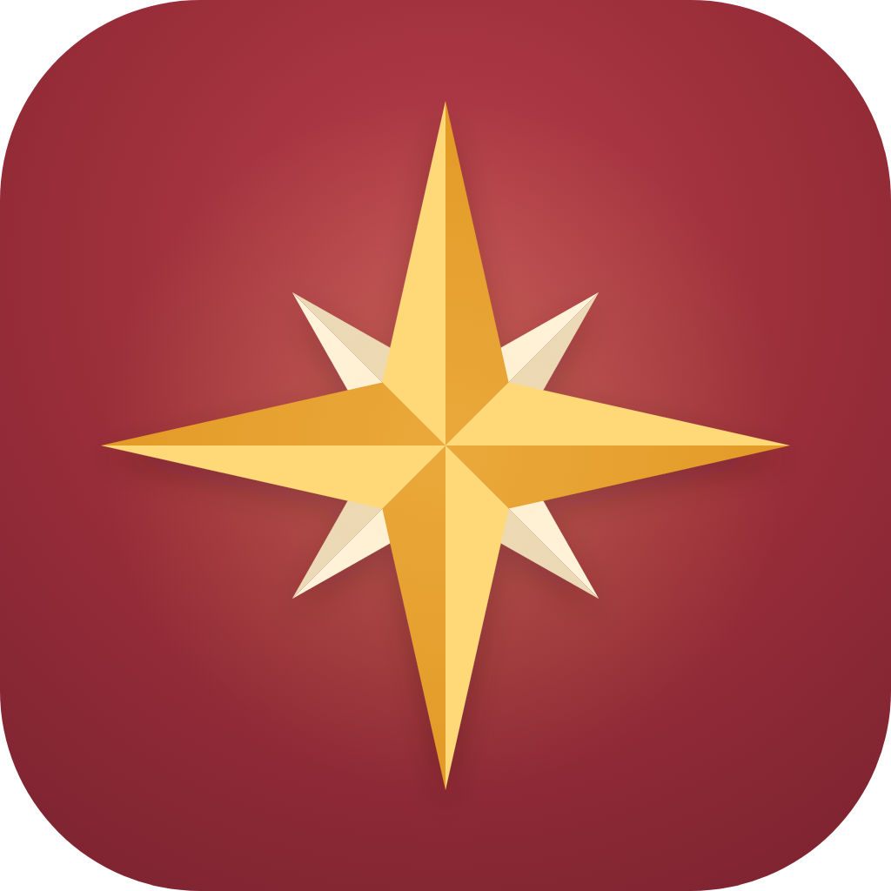

Kavis Study
Uygulama simgesi · telefonda nasıl görünür
Seçilen simge: bordo zemin üzerinde amber pusula yıldızı. Harf yok, isimden bağımsız. Açık, koyu ve tek renk (iOS'un "tonlu" modu) hâllerini, iPhone ve Android şeklini dene.
Eski öneriler (arşiv · kullanılmıyor)
{{desc}}
Boyutlar
Küçükken de okunuyor mu? En önemli test bu.
KAVISSTUDYArtık yanında Kavis var.Eğitim · Ücretsiz deneme{{toastMsg}}